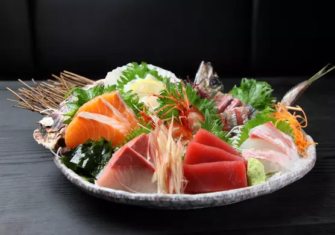
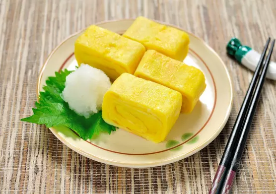
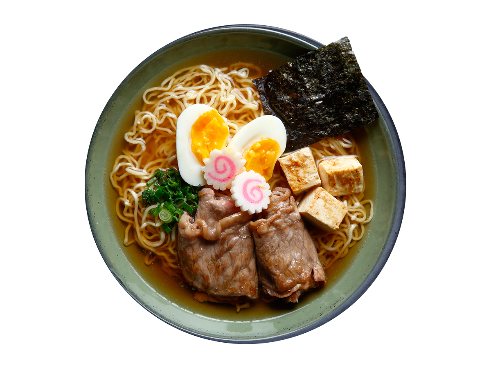
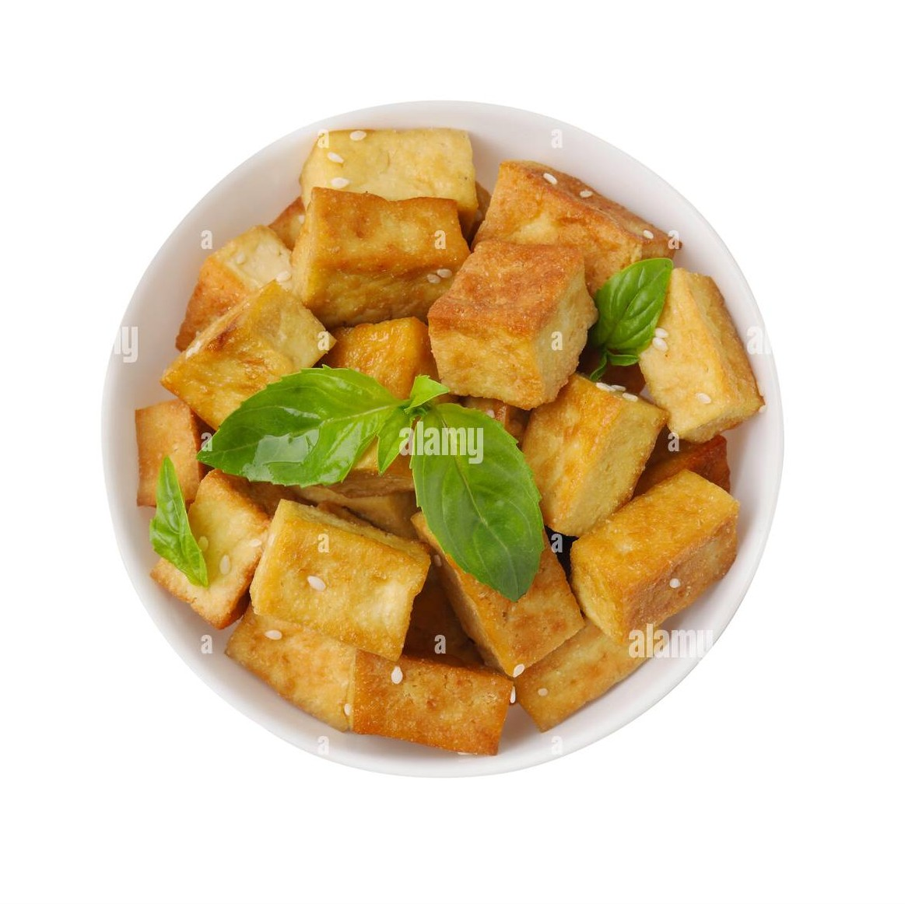
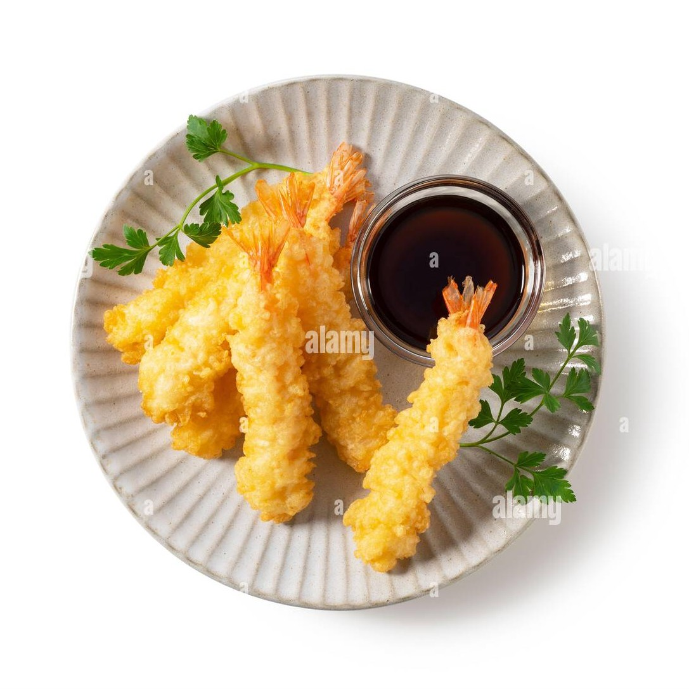
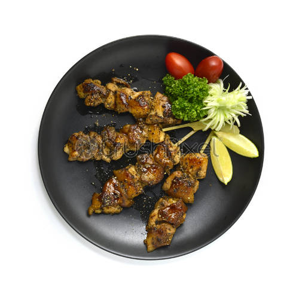

Are you hungry?
We are Enthusiasts Of Japanese Cuisine
We are a large Varity of Authentic Japanese Food, the best in the town.Check out our menus & Delivery options. It's Quick. Easy & Totally Secure.

Sashimi
- daikon radish
- pickled ginger
- wasabi or soy sauce
- salmon, tuna, halibut, squid
Ramen
- ramen noodles
- scallions, garlic
- soy sauce
- eggs
- sesame oil

Donburi
- steamed rice topped with meat
- fish
- veggies
- eggs
- sauces

Tamagoyaki
- eggs
- soy sauce
- sugar
- dashi
Check Out!
About Our Top 5 Menus
Sushi is one of the first foods that spring to mind when we think about Japanese cuisine. This delicacy was one of the first Japanese dishes to be exported to the US after the Meiji Restoration in 1868, and since then its popularity has steadily increased year after year.
The word ‘sushi’ refers to any dish made with Japanese rice that has been seasoned with rice vinegar. Common varieties of sushi include makizushi (sushi rice and fillings rolled up in nori seaweed), nigiri sushi (shaped, bite-size mounds of sushi rice with single slices of raw fish or similar draped over the top) and inarizushi (sushi rice stuffed inside pockets of inari; a type of seasoned, fried tofu).
The word ‘sushi’ refers to any dish made with Japanese rice that has been seasoned with rice vinegar. Common varieties of sushi include makizushi (sushi rice and fillings rolled up in nori seaweed), nigiri sushi (shaped, bite-size mounds of sushi rice with single slices of raw fish or similar draped over the top) and inarizushi (sushi rice stuffed inside pockets of inari; a type of seasoned, fried tofu).

One of the three main noodle varieties eaten in Japan; udon noodles are thick, chewy, and traditionally made from wheat flour and brine water.
Udon can be served in a number of different ways (mixed into stir fries, added to hot pots, served cold with a tsuyu or tentsuyu soup base on the side for dipping), but are most commonly used in noodle soups, where they are served in a savoury soup broth with different garnishes.
Some of the most common udon noodle soup dishes include kitsune udon (‘fox udon’, topped with aburaage fried tofu), tempura udon (topped with tempura battered seafood and vegetables), and chikara udon (‘power udon’, topped with grilled mochi rice cakes).
Udon can be served in a number of different ways (mixed into stir fries, added to hot pots, served cold with a tsuyu or tentsuyu soup base on the side for dipping), but are most commonly used in noodle soups, where they are served in a savoury soup broth with different garnishes.
Some of the most common udon noodle soup dishes include kitsune udon (‘fox udon’, topped with aburaage fried tofu), tempura udon (topped with tempura battered seafood and vegetables), and chikara udon (‘power udon’, topped with grilled mochi rice cakes).

Although tofu is mainly thought of in Western countries as a health food or vegetarian alternative, in Southeast Asian countries like Japan, tofu (particularly silken tofu) is enjoyed by everybody and is a common part of the traditional diet.
To answer the question ‘what is tofu?’, it is soy milk that has been coagulated, with the resulting curds being pressed into blocks. These blocks come in differing levels of firmness, and can be eaten uncooked (perhaps with a couple of savoury garnishes), boiled in hot pots, or fried into tasty pieces of aburaage and used as a garnish.
To answer the question ‘what is tofu?’, it is soy milk that has been coagulated, with the resulting curds being pressed into blocks. These blocks come in differing levels of firmness, and can be eaten uncooked (perhaps with a couple of savoury garnishes), boiled in hot pots, or fried into tasty pieces of aburaage and used as a garnish.

If you enjoy crispy fried foods, then you will love tempura. Tempura are pieces or slices of meat, fish, and/or vegetables that have been covered in a special tempura batter and deep fried until they become crunchy and pale gold in colour.
Unlike in the UK, where battered foods tend to be made from meats and fish, tempura tends to be made from either small shellfish like prawns, or vegetables like green beans, pumpkin, daikon mooli radish, and sweet potato. Tempura can be eaten by itself (perhaps with a little grated daikon and a small dish of tsuyu for dipping), or served on top of rice bowls or noodle soups.
Unlike in the UK, where battered foods tend to be made from meats and fish, tempura tends to be made from either small shellfish like prawns, or vegetables like green beans, pumpkin, daikon mooli radish, and sweet potato. Tempura can be eaten by itself (perhaps with a little grated daikon and a small dish of tsuyu for dipping), or served on top of rice bowls or noodle soups.

While we in the UK might pick up a serving of chips or a hot dog during a sports match, the Japanese will pick up some yakitori. With a name literally meaning ‘barbecued chicken’, yakitori are small skewers of bite-size chicken pieces seasoned with salt or brushed with a sauce, or tare, of mirin rice wine, soy sauce, sake alcohol, and sugar.
There are many different types of yakitori, but the most common varieties are momo (chicken thigh), negima (chicken and spring onion), and tsukune (chicken meatballs).
There are many different types of yakitori, but the most common varieties are momo (chicken thigh), negima (chicken and spring onion), and tsukune (chicken meatballs).